Rescue Meal 사용자 흐름 개선
2026년 10월 8일 · 로컬 앱 화면과 별도의 임시 API 저장소로 확인했습니다. 실제 카메라 인식, 운영 배포, 실기기와 실제 계정 인증을 완료했다는 의미는 아닙니다.
두 번의 문제 분석 → 수정 → 검증 루프를 진행했습니다. 빌드·모바일 화면 구성 검사·관련 테스트 34개·정적 파일 처리 검사 4개가 통과했습니다. 기존 CSS 용량 한도 초과는 남아 있습니다.
식단 제목 대비
어두운 모드에서 밝은 배경에 묻히던 제목을 테마에 맞는 표면과 글자로 수정했습니다.
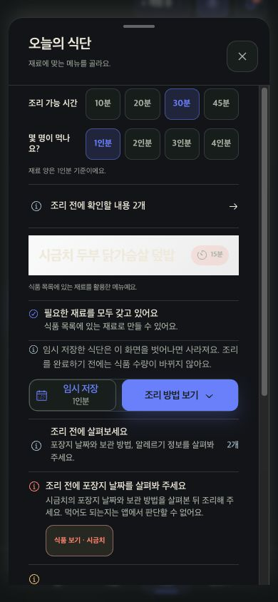
수정 전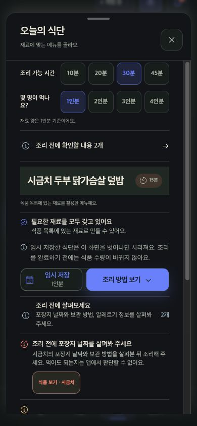
수정 후직접 등록
입력 방법의 쓰임을 표시하고 반복 안내를 정리했습니다. 저장 요약과 날짜 의미 안내는 유지했습니다.
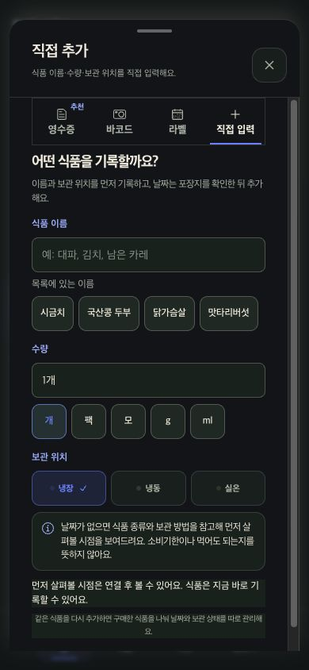
수정 전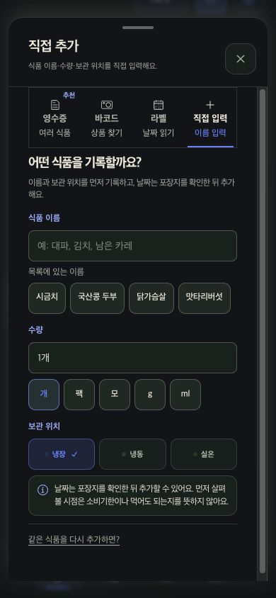
수정 후구매 체크와 재고 추가
체크 표시를 복구하고 상품 정보와 행동 버튼을 분리했습니다. 수량과 진행 상태에 취소선을 그리지 않습니다.
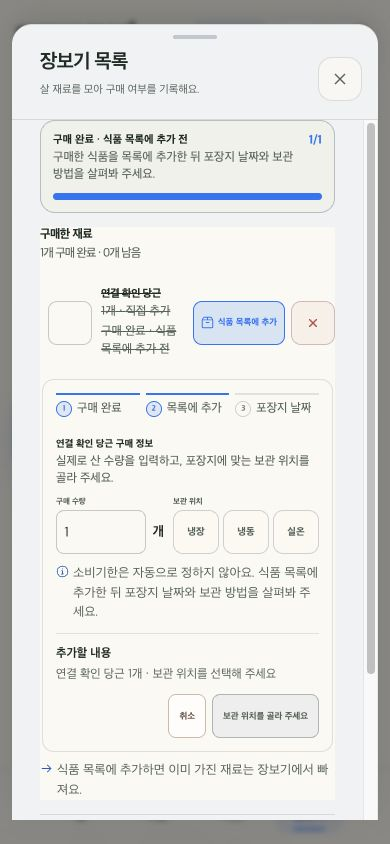
수정 전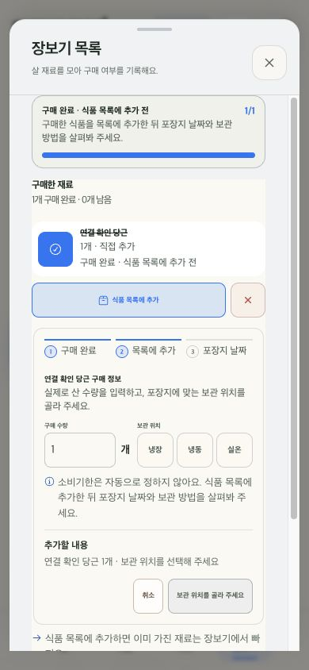
수정 후흐름별 확인 결과
1. 첫 진입
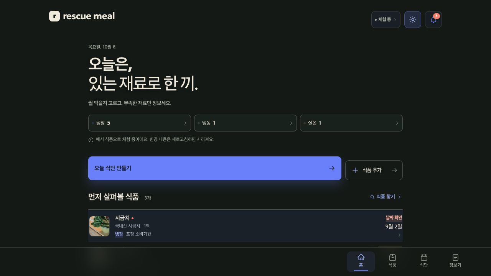
체험 식품의 날짜를 현재 날짜에 맞추고 저장 범위를 안내화면 및 로컬 동작 기준2. 등록 방법 선택
각 방법의 쓰임을 표시화면 및 로컬 동작 기준3. 영수증 검토
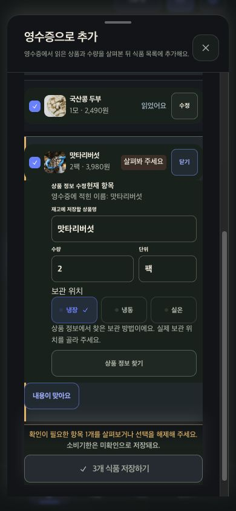
항목 선택·수정과 다른 입력 방식 전환 후 검토 유지 확인화면 및 로컬 동작 기준4. 바코드 상품 확인
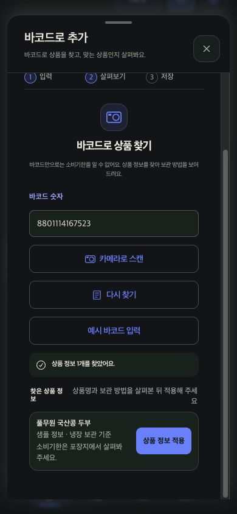
상품 정보를 확인한 뒤 적용하는 예시 흐름 확인화면 및 로컬 동작 기준5. 라벨 날짜 확인
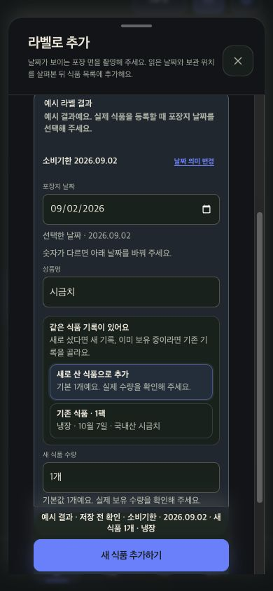
날짜 의미·새 식품/기존 식품 대상·저장 요약 확인화면 및 로컬 동작 기준6. 직접 등록
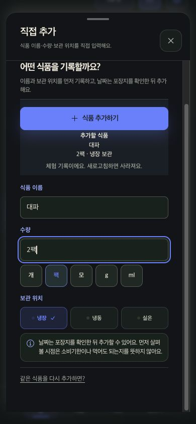
이름·수량·보관 위치·체험 저장 범위 확인; 별도 API에서 새로고침 후 2팩 유지 확인화면 및 로컬 동작 기준7. 식품 검색과 상세
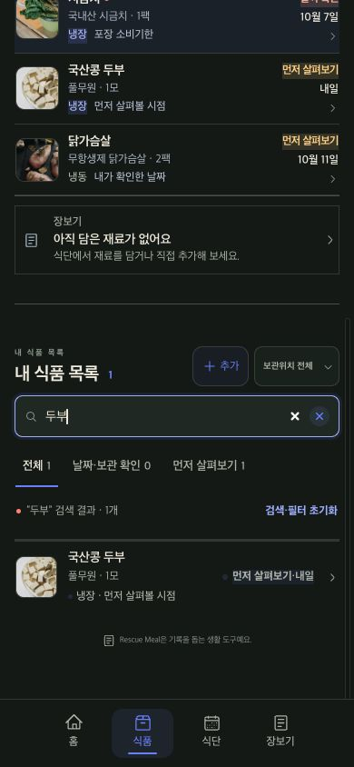
두부 검색 1개 결과·검색 초기화·날짜 및 소비 기록 안내 확인화면 및 로컬 동작 기준8. 식단
어두운 모드 제목 대비 수정; 재료·날짜·알레르기 안내 확인화면 및 로컬 동작 기준9. 장보기와 재고 추가
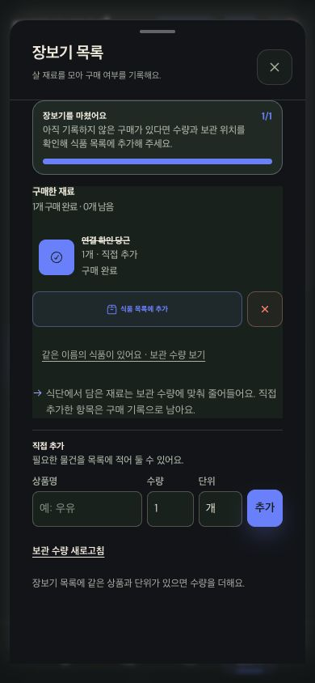
구매 체크·보관 위치 선택·재고 반영·새로고침 유지 확인. 직접 입력 구매 기록의 잔존 동작에 맞게 문구 수정화면 및 로컬 동작 기준10. 알림
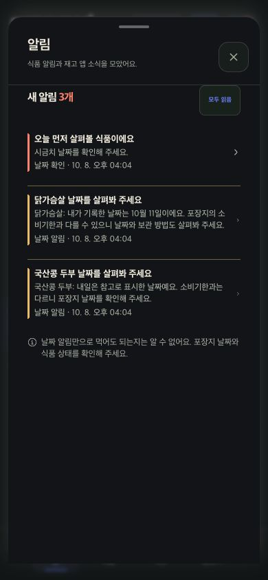
식품별 날짜 출처 안내와 홈 복귀 확인화면 및 로컬 동작 기준11. 계정과 체험
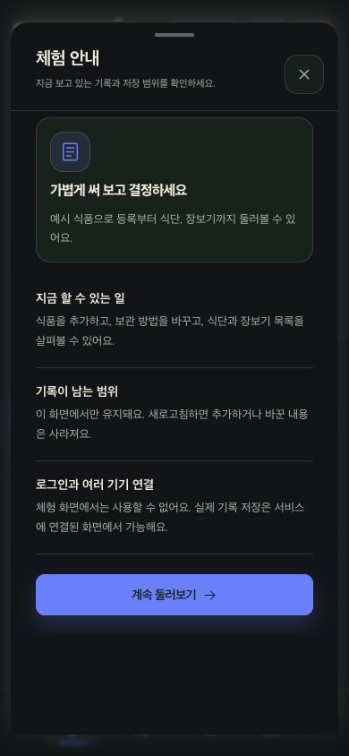
연결 없는 체험 상태에서 비활성 로그인 폼을 제거하고 저장 범위 안내; 실제 게스트 로그인 폼 유지 확인화면 및 로컬 동작 기준확인 범위와 남은 점
- 실제 영수증/라벨 카메라 및 외부 인식 품질 미검증; 예시 검토 흐름 확인
- 운영 배포 및 실기기 미검증
- 실제 계정 가입·로그인·비밀번호 재설정·기기 알림 전송 미실행
- 자동 브라우저 테스트 전체 및 완전한 접근성 준수 미확인
- API에 저장된 날짜는 바꾸지 않음. 오늘 기준 날짜는 연결 없는 체험 데이터에만 적용
세부 검증 기록 보기